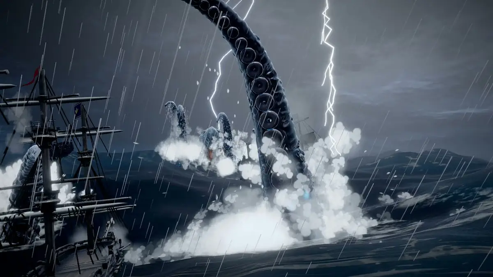

原帖照录
蛙趣，刚用 Opus5.5 + Hi3D 跑一个通宵搓的游戏，这个精细度，真的很哇塞！
Opus5.5编排 + Image-2.5 出图 + Hi3D MCP 做模 + Three.js 装配
整套做法分享给大家：
1、概念与多视角参考图：GPT-Image-2.5
先让 GPT-Image-2.5 出多视角的概念图和参考图（正面、侧面、背面），把材质纹理和结构确定。2、高精 3D 资产建模：Hi3D MCP
把 Hi3D 的 MCP 接进 AI工具，需要时会把参考图喂给 Hi3D MCP，秒级生成带完整 PBR 材质的高精 3D Mesh。3、Web 端性能优化：自动减面与 Draco 压缩（关键避坑点）
AI 生成的原生模型动辄几十万面，直接丢进网页必卡，让 AI 调用 MCP 时加入 LOD 网格简化并压成 Draco 格式的 glb。4、逻辑与场景组装：Three.js / WebGL
模型就绪后，AI 自动编写 Loader 异步加载，补齐物理碰撞体、海水着色器、光影和粒子特效，拼成完整可交互的世界。5、音效和配乐：WebAudio 实时合成
另外，@Hi3D_AI 刚把 V1.0 开源了，由 200 万真实生产资产训出，细节还原和多视角保真都很顶，堪称目前最扎实的工业级开源 3D 模型，摆明就是奔着 3D 赛道的 AI Infra 去的。
作者在评论区的补充
- 有人问船、堡垒、海怪是不是都要单独建模，作者答：“都是单独建模了”。
- 有人催着优化玩法做正式版上架，作者答：“其实做好了，哈哈”。
- 有人说再优化一下可以上 Steam，作者答：“那难度太高了🤪”。
- 有人问是不是电影感的游戏，作者答：“对的，现在还是有点难，但一句话一个游戏应该也快了😂”。
- 回复 @Saccc_c（《小王子》3D 游戏的作者）：“跟你学的，哈哈”。
其余作者回复只是寒暄或表情，没有收录。
流程拆解
| 环节 | 工具 | 要点 |
|---|---|---|
| 编排 | Claude Opus 5.5 | 统领全程，按需调用出图、建模，写加载与场景代码 |
| 参考图 | GPT-Image-2.5 | 正 / 侧 / 背多视角图，先把结构和材质定下来 |
| 建模 | Hi3D MCP（云端） | 参考图生成带 PBR 材质的 mesh；每个物件单独建模 |
| Web 优化 | LOD 网格简化 + Draco | 原生模型几十万面，不减面网页必卡；导出 Draco 压缩的 glb |
| 装配 | Three.js / WebGL | 异步 Loader、物理碰撞体、海水着色器、光影、粒子 |
| 声音 | WebAudio | 音效和配乐都实时合成 |
这条链路和本站收录过的几条 AI 3D 游戏流程同构：Sac 的《小王子》用 Tripo 建模、Blender/Unity MCP 装配；木马人的武侠 ARPG 用 Tripo 四边形拓扑加 Three.js。这一篇的区别在于，模型生成整个交给 MCP，减面和压缩也写进了智能体的调用步骤。
Hi3D v1.0 开源：是什么，与帖子的关系
hi3d-official/Hi3Dv1.0（2026-10-23 发布，★489，GitHub 数据取于 2026-10-27 15:25 UTC+8）是 Hi3D 开放的第二阶段几何精修模型。厂商是数学魔法 Math Magic（官网 hi3d.ai，国内站 hi3d.cn），基于自家的 Sparc3D 表示。按 README 的说法：
- 输入：同一物体的参考图 + 一个粗糙 mesh。输出：高分辨率几何，可以选 512³、1024³ 或 1536³，分别对应跑 1、2、3 轮精修（这里是名义上的稀疏提取网格，不是固定面数）。
- 训练数据：技术报告称约两百万个精选 3D 资产，与帖中“200 万真实生产资产”一致。
- 只开放推理代码和 8 个权重文件，不含训练代码和评测框架，所以仅凭仓库无法复现论文里的对比表。
- 只出几何，batch 为 1：“No textures, materials, or vertex colors are generated.”（不生成纹理、材质或顶点色。）输出会被居中并归一化，原始尺度不保留。
- 粗模要自己提供。第一阶段的粗模生成不在开源范围内，示例里可选接腾讯 Hunyuan3D-2 mini，它有单独的许可。
- 硬件门槛高：只支持 Linux、Python 3.10、计算能力 8.0 及以上的 NVIDIA GPU、CUDA 12.0–12.5，没有 CPU 路径，flash-attn 是硬依赖。实测环境是 96 GB 显存的 NVIDIA H20；README 写明 1536³ 只在这张卡上验证过，更小显卡的可行性“尚未确定”。
- 同一种子也不保证生成逐位相同的 mesh，因为 GPU 稀疏卷积和注意力不是逐位确定的。
与帖子的关系：帖中“秒级生成带完整 PBR 材质”的 Hi3D MCP，是 Hi3D 的商用云 API（文档 docs.hi3d.ai，MCP 端点 mcp.hitem3d.ai，用 client_id/secret 鉴权，按积分计费）。它支持 PBR 和多视角输入（正、背、左、右最多 4 张），模型版本到 hi3dv3.0，面数可设 10 万–500 万。官方 CLI 文档写的生成耗时是 2–15 分钟，并不是“秒级”。开源的 v1.0 只是其中精修几何的一部分。
注意事项
- “秒级”存疑：Hi3D 官方 CLI 文档写的单次生成是 2–15 分钟，帖子的说法应理解为体感或宣传口径。
- 云服务要付费：照做需要 Hi3D 平台账号和积分；MCP 用 Basic Auth，凭据不要在录屏或截图里露出来（官方文档也这样提醒）。
- 开源许可不是 OSI 许可：v1.0 用自定义的《Hi3D Open License Agreement 1.0》，许可方是 OCEANO HK HOLDING LIMITED。允许商用，但相关产品月活超过 20 万或月收入达到 100 万美元时，需在 60 天内通知许可方并另行申请书面许可；商用集成要显示
Powered by Hi3D 1.0；另附可接受使用政策。单独的生成结果（不含 Hi3D 代码或权重的 mesh）不触发这些义务。原有的 Apache-2.0 / MIT 部分仍按原条款。 - “最扎实的工业级开源 3D 模型”是作者的评价：README 里的对比图都由厂商自选，仓库不含评测集，本站无法核实。
- 帖子语气接近推广，原文没有标注合作；本站没有试玩游戏，也没有运行模型。游戏本身尚未公开。
许可处理：原帖是作者本人中文帖，照录全文。Hi3D 仓库用的是自定义许可，不属于 MIT/Apache/GPL 这类开放许可，所以 README 只做导读和短引，不全文翻译，也不转载仓库里的对比图；需要全文可看官方简体中文 README（README.zh-CN.md）。